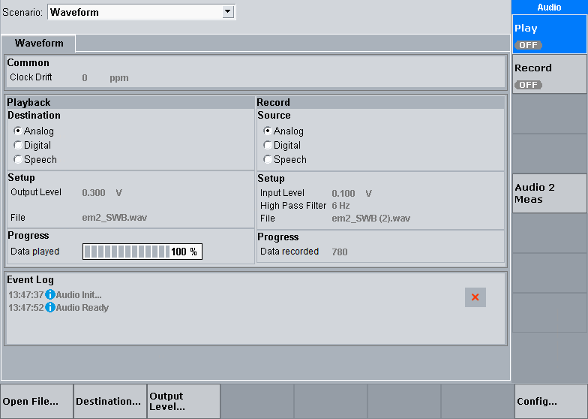

The "Waveform" tab is only available in the scenario "Waveform".
It configures the playback and recording of audio files in the WAV format. You can use both features in parallel (play one file and record another file).
The settings of the two audio software instances are coupled. You can use instance 1 and ignore instance 2.

For configuration of the settings displayed in this area, see "Common Settings".
The "Playback" area is related to the playback of a waveform file.
For configuration of the settings in this area, see "Waveform Playback Settings".
Shows the progress of playing a waveform file.
Remote command:The "Record" area is related to the recording of a waveform file.
For configuration of the settings in this area, see "Waveform Recording Settings".
Shows the amount of already recorded data, in kbyte.
Remote command:This area reports events and errors.
Each entry consists of a timestamp, an icon indicating the category of the event and a short text describing the event.
Meaning of the category icons:  = information, warning and error
= information, warning and error
The button clears the event log.
Remote command:Opens a dialog box for selection of the waveform file to be loaded for playback.
Remote command:Opens a dialog box for selection of the target waveform file for recording.
Remote command: